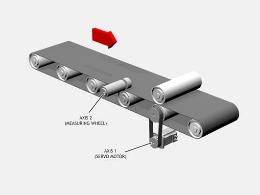

Axis Command
ADD_DAC(axis)
Adds the output from the servo control block of a secondary axis to the output of the base axis. The resulting DAC_OUT of the base axis is then the sum of the two control loop outputs.
The ADD_DAC command is provided to allow a secondary encoder to be used on a servo axis to implement dual feedback control.
This would typically be used in applications such as a roll-feed where a secondary encoder to compensate for slippage is required.
|
axis: |
Number of the second axis, who’s output will be added
to the base axis.
|
Use ADD_DAC to add the output of a measuring wheel to the servo motor axis controlling a roll-feed. Set up the servo motor axis as usual with encoder feedback from the motor drive. The measuring wheel axis must also be set up as a servo. This is so that the software will perform the servo control calculations on that axis.
It is necessary for the two axes to be controlled by a common demand position. Typically this would be achieved by using ADDAX to produce a matching DPOS on BOTH axes. The servo gains are then set up on BOTH axes, and the output summed on to one physical output using ADD_DAC.
If the required demand positions on both axes are not identical due to a difference in resolution between the 2 feedback devices, ENCODER_RATIO can be used on one axis to produce matching UNITS.

BASE(1)
ATYPE = 44
' No need to scale the servo encoder as it is the highest resolution
ENCODER_RATIO(1,1)
' Link to the output of the encoders virtual DAC
ADD_DAC(2)
UNITS = 10000
' Disable the output from the servo control block by setting PGAIN = 0
P_GAIN = 0
SERVO = ON
BASE(2)
' ATYPE must be set to a servo ATYPE to enable the closed position loop
ATYPE = 44
' Set the encoder ratio so that it has the same counts per rev as the servo
ENCODER_RATIO(10000,4096)
' Superimpose axis 1 demand on axis 2
ADDAX(1)
UNITS = 10000
' Use servo control block from encoder axis by setting >0 P_GAIN
P_GAIN = 0.5
SERVO = ON
WDOG=ON
BASE(1)
' Start movements
MOVE(1200)
WAIT IDLE